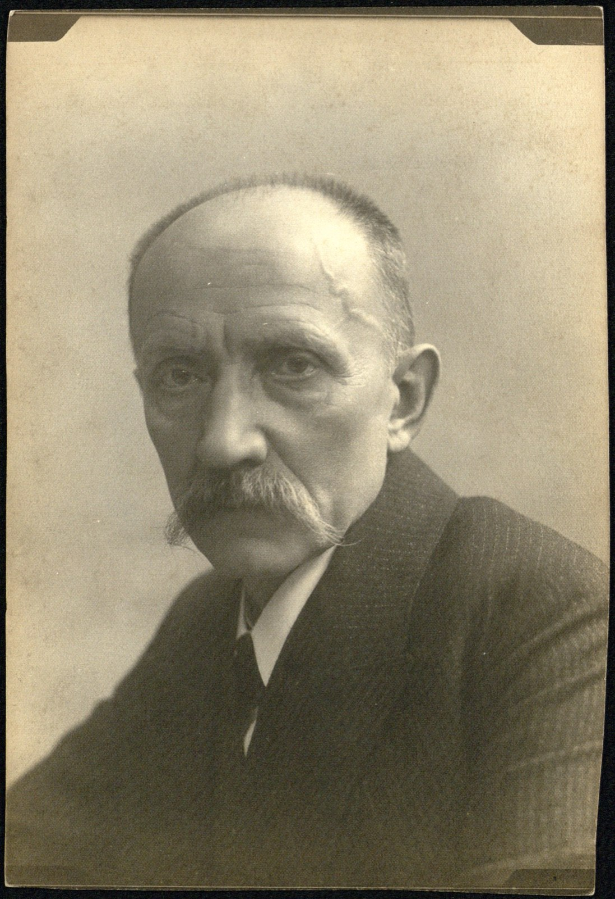
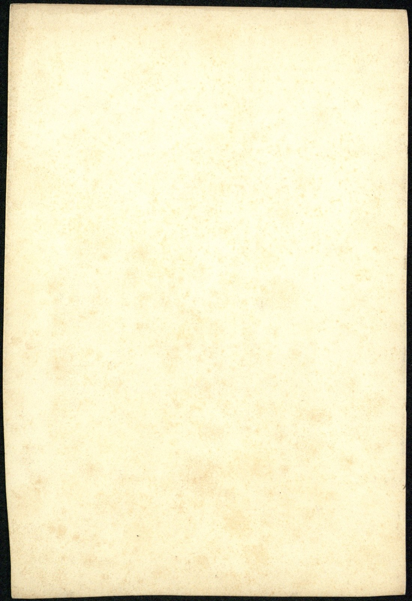

Fotograf we własnym atelier
Starszy mężczyzna o gęstym, siwiejącym wąsie, w ciemnym garniturze — w zbiorze zidentyfikowany jako sam założyciel rzeszowskiego atelier, nadworny fotograf od 1898 roku i kronikarz miasta. Twarz człowieka, który przez dekady patrzył na Rzeszów przez obiektyw, zanim ktokolwiek inny zdążył go sfotografować.
Tytuł „cesarsko-królewskiego nadwornego fotografa” nadawała atelierom sama monarchia habsburska — rzadkie wyróżnienie poza Wiedniem, zastrzeżone dla pracowni o uznanej renomie.
DZF:2:1 · fotografia portretowa